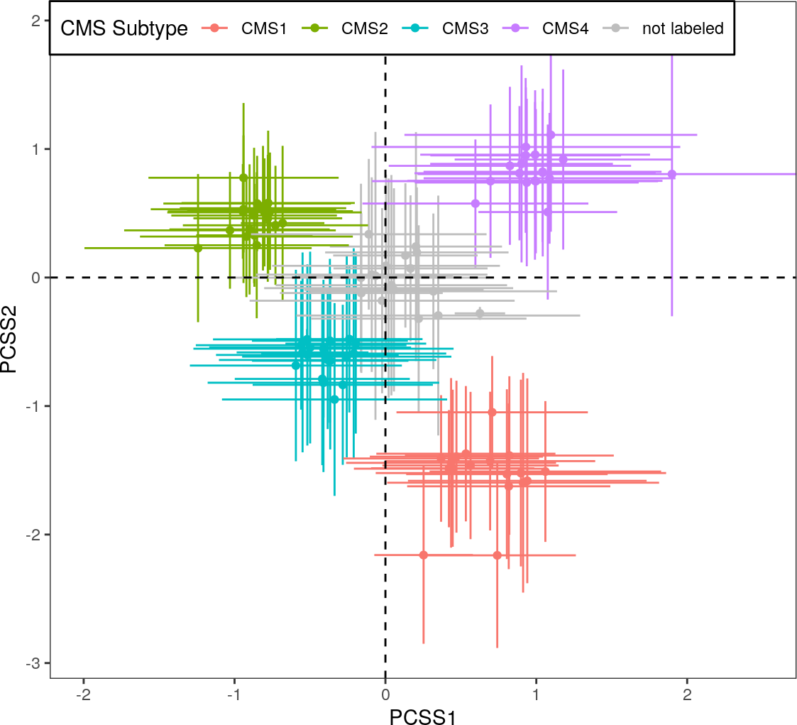
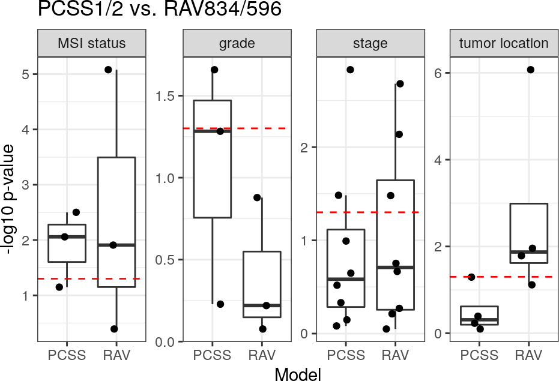
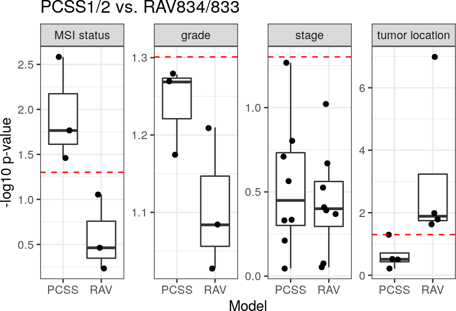
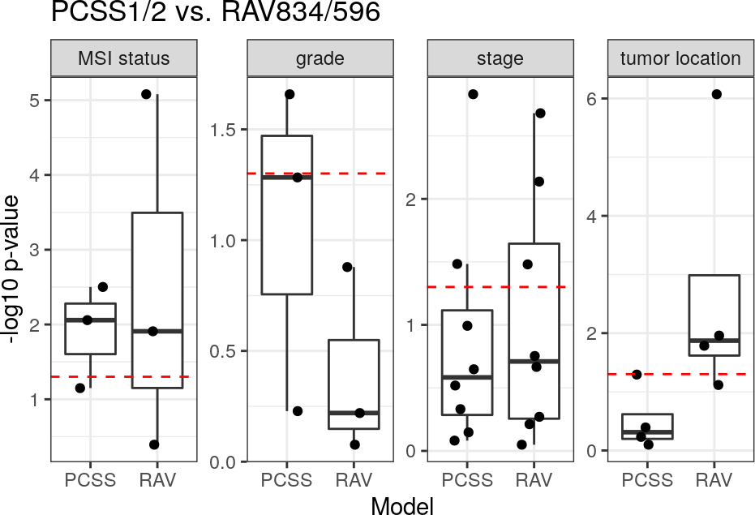
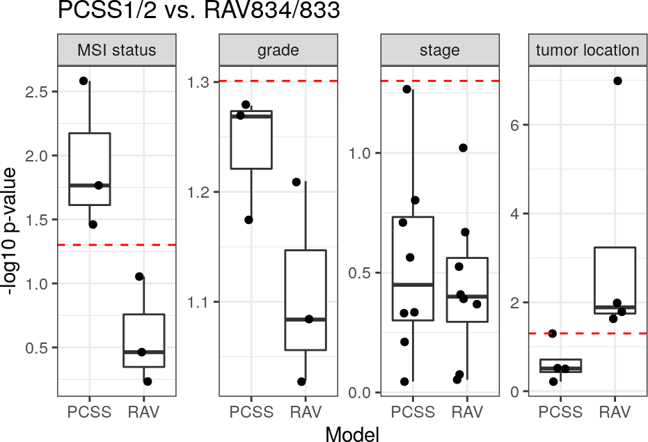

Figures and Tables for GenomicSuperSignature Paper
Sehyun Oh
December 14, 2020
Source:vignettes/manuscript.Rmd
manuscript.RmdBenchmark CRC paper
CRC_top10_validated_ind.tsv
A data frame of top 10 validated indexes from 18 CRC datasets. This table was created in CRC/repeat_Fig4A.Rmd
x <- read.table("CRC/outputs/CRC_top10_validated_ind.tsv")
head(x)
#> val_ind_1 val_ind_2 val_ind_3 val_ind_4 val_ind_5
#> GSE12225.GPL3676_eset 312 21 468 684 119
#> GSE12945_eset 312 981 832 684 758
#> GSE13067_eset 188 833 324 220 192
#> GSE13294_eset 1575 833 192 58 188
#> GSE14095_eset 2 1032 338 1387 725
#> GSE14333_eset 832 188 834 1575 833
#> val_ind_6 val_ind_7 val_ind_8 val_ind_9 val_ind_10
#> GSE12225.GPL3676_eset 758 504 153 1016 27
#> GSE12945_eset 119 468 21 516 504
#> GSE13067_eset 1575 1166 438 868 1467
#> GSE13294_eset 187 832 1008 2538 1166
#> GSE14095_eset 1726 188 1843 1575 189
#> GSE14333_eset 220 192 61 579 595CRC subtyping
Scatter plots showing how different signatures perform with CRC subtyping. These plots were created in CRC/repeat_Fig4A.Rmd
all <- list.files("CRC/outputs")
scatterplots <- all[grep("scatter_", all)]
for (plot in scatterplots) {
x <- readRDS(file.path("CRC/outputs", plot))
print(x)
}
#> $value
#>
#> $visible
#> [1] FALSE
#>
#> $value
#>
#> $visible
#> [1] FALSE
#>
#> $value
#>
#> $visible
#> [1] FALSE
CRC binary clinical variables
Bar plots comparing different models in differentiating CRC binary clinical variables. These plots were created in CRC/repeat_Fig4C.Rmd
all <- list.files("CRC/outputs")
barplots <- all[grep("boxplot_", all)]
for (plot in barplots) {
x <- readRDS(file.path("CRC/outputs", plot))
print(x$value)
}

 

Benchmark multiPLIER
neutrophil_estimate.rds
Two scatter plots of RAV1551 x Neutrophil count/estimate of SLE-WB dataset. This plot was created in SLE-WB/repeat_Fig3_SLE-WB.Rmd
x <- readRDS("SLE-WB/outputs/neutrophil_estimate.rds")
x
nares_neutrophil.rds
A scatter plot of RAV1551 x Neutrophil estimate of NARES dataset. This plot was created in NARES/repeat_Fig3_NARES.Rmd
x <- readRDS("NARES/outputs/nares_neutrophil.rds")
x
sessionInfo()
#> R version 4.0.3 (2020-10-10)
#> Platform: x86_64-pc-linux-gnu (64-bit)
#> Running under: Ubuntu 18.04.5 LTS
#>
#> Matrix products: default
#> BLAS: /usr/lib/x86_64-linux-gnu/openblas/libblas.so.3
#> LAPACK: /usr/lib/x86_64-linux-gnu/libopenblasp-r0.2.20.so
#>
#> locale:
#> [1] LC_CTYPE=en_US.UTF-8 LC_NUMERIC=C
#> [3] LC_TIME=en_US.UTF-8 LC_COLLATE=en_US.UTF-8
#> [5] LC_MONETARY=en_US.UTF-8 LC_MESSAGES=en_US.UTF-8
#> [7] LC_PAPER=en_US.UTF-8 LC_NAME=C
#> [9] LC_ADDRESS=C LC_TELEPHONE=C
#> [11] LC_MEASUREMENT=en_US.UTF-8 LC_IDENTIFICATION=C
#>
#> attached base packages:
#> [1] stats graphics grDevices utils datasets methods base
#>
#> other attached packages:
#> [1] BiocStyle_2.18.1
#>
#> loaded via a namespace (and not attached):
#> [1] compiler_4.0.3 pillar_1.4.7
#> [3] BiocManager_1.30.10 tools_4.0.3
#> [5] digest_0.6.27 lattice_0.20-41
#> [7] nlme_3.1-151 evaluate_0.14
#> [9] memoise_1.1.0 lifecycle_0.2.0
#> [11] tibble_3.0.4 gtable_0.3.0
#> [13] mgcv_1.8-33 pkgconfig_2.0.3
#> [15] rlang_0.4.9 Matrix_1.2-18
#> [17] rstudioapi_0.13 yaml_2.2.1
#> [19] pkgdown_1.6.1 xfun_0.19
#> [21] GenomicSuperSignaturePaper_0.0.3 withr_2.3.0
#> [23] stringr_1.4.0 dplyr_1.0.2
#> [25] knitr_1.30 desc_1.2.0
#> [27] generics_0.1.0 fs_1.5.0
#> [29] vctrs_0.3.5 systemfonts_0.3.2
#> [31] tidyselect_1.1.0 rprojroot_2.0.2
#> [33] grid_4.0.3 glue_1.4.2
#> [35] R6_2.5.0 textshaping_0.2.1
#> [37] rmarkdown_2.6 bookdown_0.21
#> [39] farver_2.0.3 purrr_0.3.4
#> [41] ggplot2_3.3.2 magrittr_2.0.1
#> [43] splines_4.0.3 scales_1.1.1
#> [45] htmltools_0.5.0 ellipsis_0.3.1
#> [47] assertthat_0.2.1 colorspace_2.0-0
#> [49] labeling_0.4.2 ragg_0.4.0
#> [51] stringi_1.5.3 munsell_0.5.0
#> [53] crayon_1.3.4